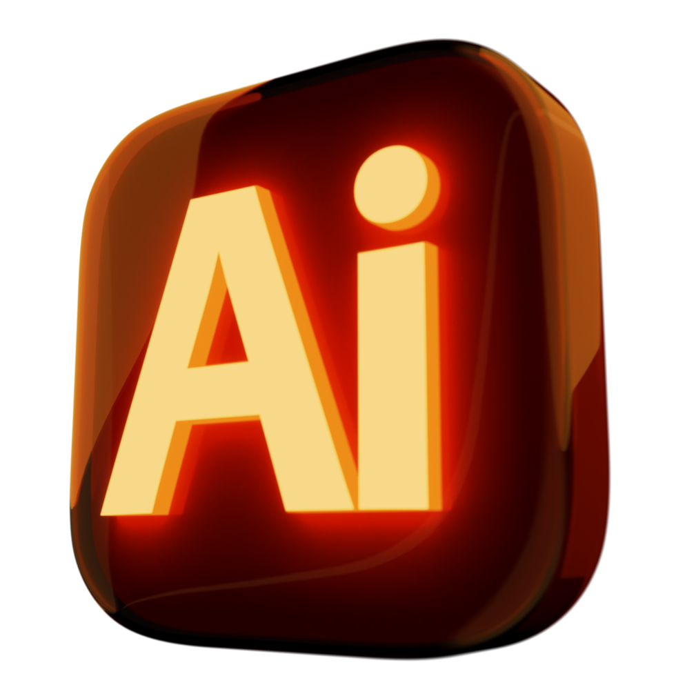
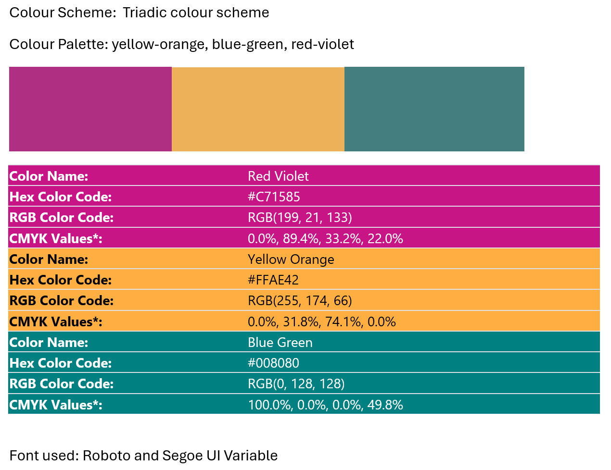
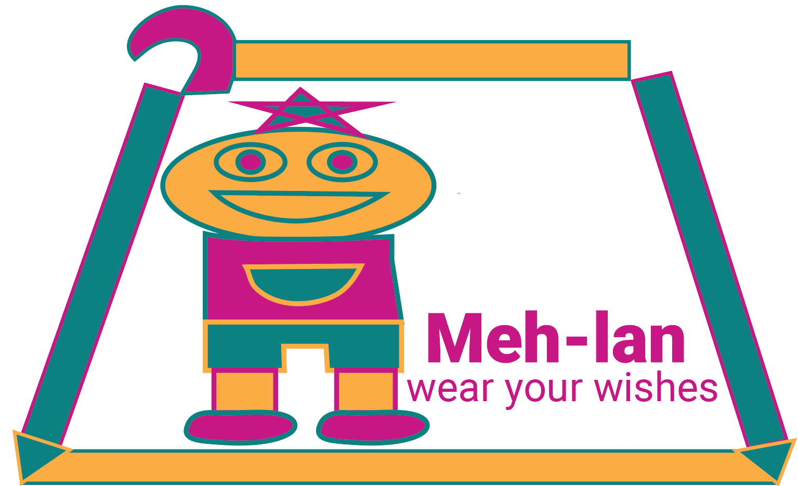
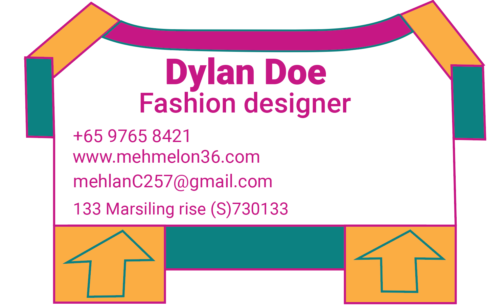
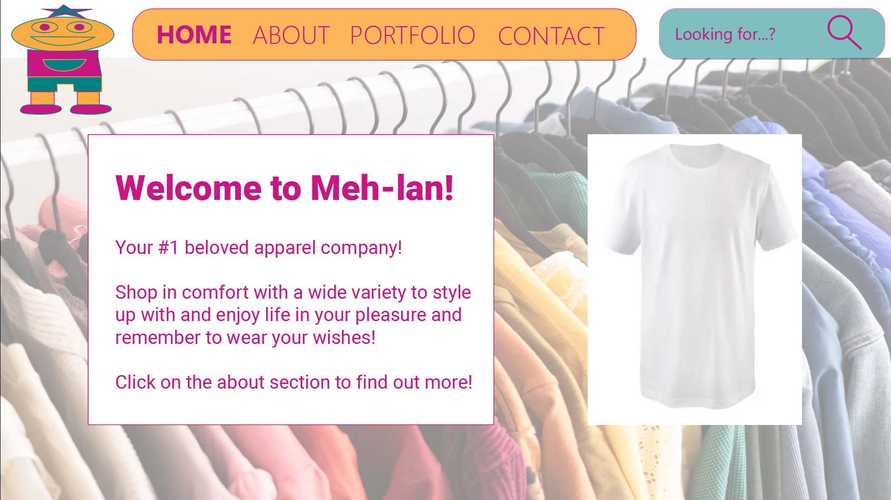
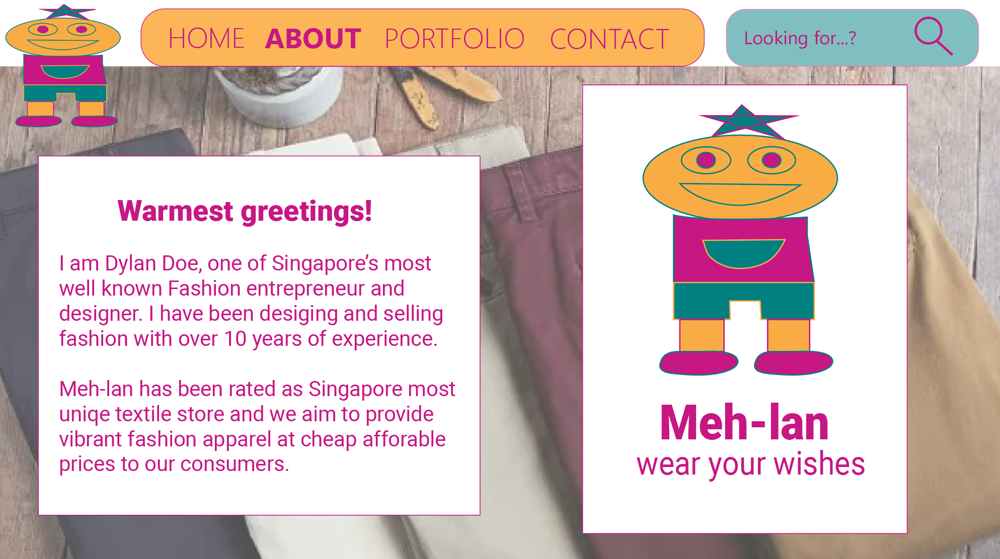
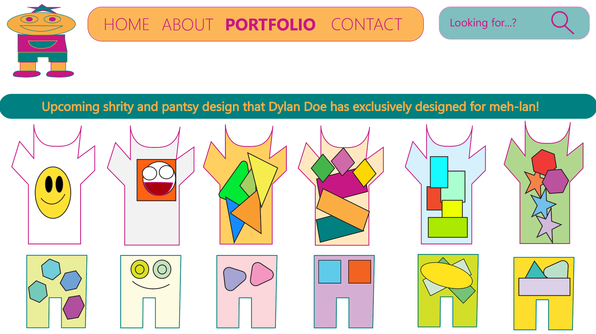
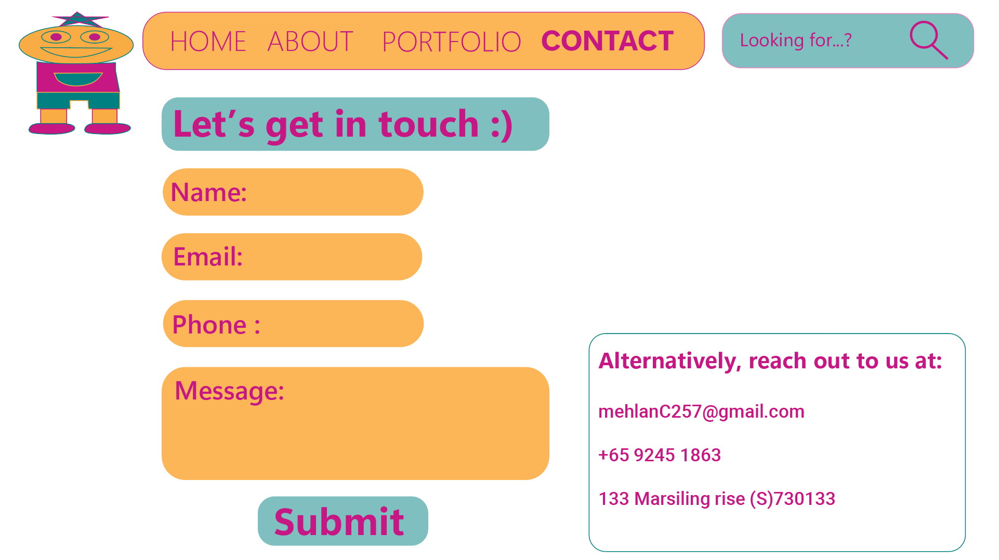
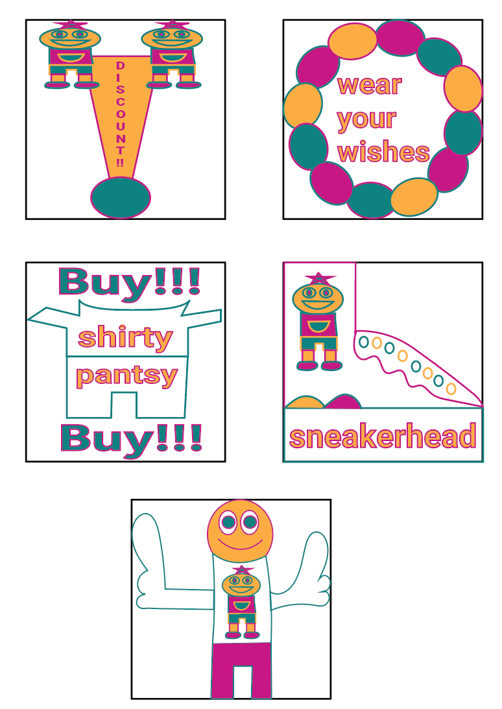

Adobe Illustrator Design









Colour Scheme Information
Front of Name Card
Back of Name Card
Home Webpage
About Webpage
Portfolio Webpage
Contact Webpage
A set of Five Business Stickers
Objectives
I created the following which are part of the requirements of this project demonstrating creativity and technical
skill:
• General Design Brief (Moodboard, Colour Scheme, Colour Palette, Font Used, Design Rationale)
• Name Card (Front and Back)
Technical Competencies
Basic Tool Usage
• Understanding of basic Illustrator tools (Selection, Shape, Pen)
• Creating simple vector shapes and paths
• Using artboards for simple layouts
Design Principles
• Applying colour theory
• Maintaining visual balance and alignment
Typography Fundamentals
• Font selection for appriproate them
• Text alignment for visual hierarchy
• Simple text hierarchy by applying correct size
File Management & Export
• Setting up Illustrator documents
• Saving and exporting files in common formats (PNG, PDF)
Project Workflow
• Prepare a design brief document
• Follow design requirements
• Make simple revisions based on feedback
• Manage simple design process from start to finish
Building process
There is a need to present originality, creativity, design consistency and human
interest in the design composition and concept development.
We are supposed to choose a theme based on what your ideal business is supposed to be.
The theme of my design is fashion retail business because I enjoy fashion a lot, I decided to create a theme
related to fashion which shows my ideal business as a
fashion designer.
The business name card is designed with fashion elements in mind and stickers which are related to possible
items which are sold in fashion retail stores.
For more information, you can check out my design brief linked below.